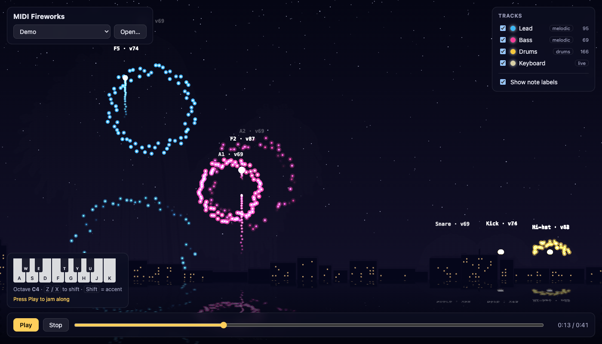
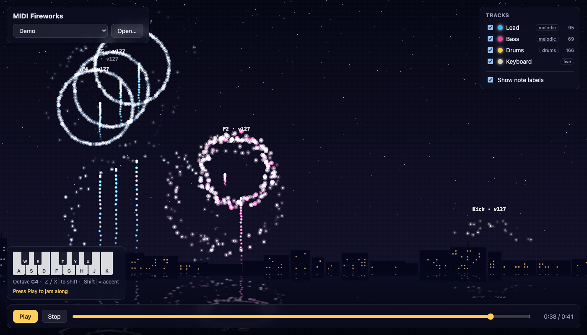

МІНІСТЕРСТВО ОСВІТИ І НАУКИ УКРАЇНИ
КИЇВСЬКИЙ НАЦІОНАЛЬНИЙ УНІВЕРСИТЕТ ІМЕНІ ТАРАСА ШЕВЧЕНКА
Факультет комп’ютерних наук та кібернетики
ЗВІТ
з лабораторної роботи № 2
з дисципліни «Розробка мультимедійних систем»
на тему: «Розробка мультимедійного застосунку з використанням сучасних технологій»
Варіант 3. MIDI-анімація
Виконавець:
студент групи ІПС-42
Петриченко Павло
Київ — 2026
Розробити програму, яка створює анімацію на основі MIDI-файлу з щонайменше двома доріжками. Дані MIDI мають керувати щонайменше двома параметрами анімації, а зв’язок між нотами й поведінкою об’єктів має бути наочним (варіант 3).
Результат — веб-застосунок «MIDI Fireworks» (TypeScript, Canvas 2D, Tone.js, @tonejs/midi). Кожна нота запускає ракету, яка вибухає феєрверком точно в момент звучання ноти. Код: github.com/pavlo-petrychenko/multi_lab_2.
Файл розбирається бібліотекою @tonejs/midi. Вона переводить дельта-час подій з тіків у секунди: t = Σ Δticks / PPQ · tempo / 106. Кожна нота отримує час початку, тривалість (від Note On до Note Off), висоту 0–127 і velocity 0–1. Доріжка на каналі 10 вважається ударною. Усі ноти зводяться в один відсортований за часом масив. Ноти однієї доріжки, що починаються в межах 30 мс одна від одної, утворюють акорд. Демонстраційний файл має 3 доріжки (Lead, Bass, Drums; 330 нот, 41,5 с), а гучність у ньому зростає до фіналу.
Висота ноти нормується до u = clamp((p − 36)/60; 0; 1). Координати світу: y = 0 — земля, y = 1 — верх неба.
| Дані MIDI | Параметр анімації | Правило |
|---|---|---|
| Час Note On | момент вибуху | рівно в tноти (розділ 3) |
| Висота p | висота вибуху, позиція x | h = 0,35 + 0,55u; нижчі ноти лівіше в смузі доріжки |
| Доріжка | смуга екрана, колір | n доріжок → n смуг; свій відтінок для кожної |
| Velocity v | розмір, щільність, яскравість | r = 0,08 + 0,12v; N = 30 + 90v частинок; L = 50 + 20v % |
| Velocity v | мерехтіння, спалах неба | v ≥ 0,85 — іскри мерехтять; v > 0,7 — небо підсвічується |
| Тривалість d | час життя іскор | clamp(0,6 + 1,2d; 0,6; 3) с |
| Акорд, тривалість | тип вибуху | ≥ 3 нот → кільце; d ≥ 0,8 с → «верба»; d ≤ 0,25 с → зірки діляться на 4; інакше сфера |
| Ударні (канал 10) | вибух над дахами, тремтіння | без ракети; бочка трясе екран з силою 5v px |
Єдиний годинник для звуку й анімації — транспорт Tone.js. На кожному кадрі (≈60 Гц) програма бере вікно часу (tпопер; t] і відбирає ноти, що мають прозвучати через T = 1 с: tноти ∈ (tпопер + T; t + T]. Межі знаходяться бінарним пошуком у відсортованому масиві, тому кожна нота береться рівно один раз. Звук ноти одразу планується на транспорті на момент tноти, а з землі стартує ракета. Її початкову швидкість обрано так, щоб за час T вона досягла висоти h (рис. 1):
y(T) = v0T − gT2/2 = h ⇒ v0 = h/T + gT/2.
Висота ракети рахується аналітично, тому вибух припадає на перший кадр після tноти (похибка ≤ 17 мс) незалежно від FPS.
Під час вибуху створюється N частинок, рівномірно розподілених по колу (кут 2πi/N з невеликим випадковим розкидом) зі швидкістю, пропорційною r. Рух рахується методом Ейлера: v ← v·kdt (опір повітря), vy ← vy − g·dt, x ← x + v·dt. Прозорість згасає як 1 − (вік/життя)². Кадр не очищується: поверх нього малюється напівпрозоре небо, тому частинки лишають шлейфи, а адитивне змішування кольорів дає світіння.


Програма перетворює MIDI-файл на синхронізоване зі звуком шоу феєрверків. Дані MIDI (час, висота, velocity, тривалість, доріжка, акорди, ударні) керують десятьма параметрами анімації. Синхронізацію забезпечують єдиний аудіогодинник, відбір нот наперед і формула v0 = h/T + gT/2. Зв’язок нот із вибухами видно на підписах нот («F5 · v74»), при вимкненні доріжок і на паузі.